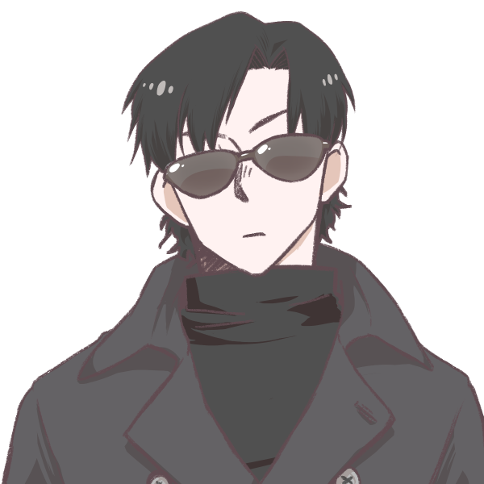
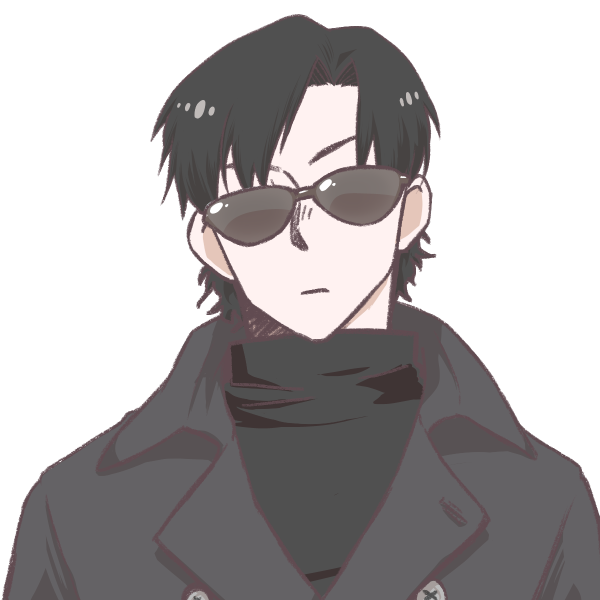
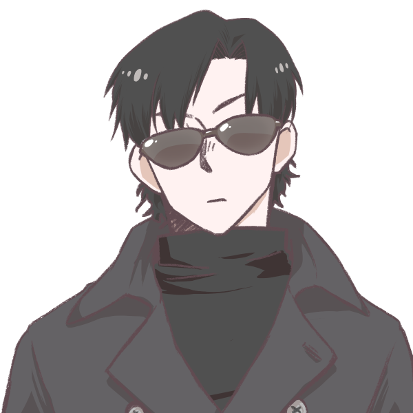

Marcos Silva
Homem branco, alto, cabelo escuro, culto, 26 anos.
Acrobacia: |Investigação: 5 | Adestramento: |Luta: 5 | artes: |Medicina: | Atletismo: |Ocultismo: | Atualidades: |Percepção: 5 | Ciências: 5 |Pilotagem: | Crime: |Pontaria: 5 | Dipolmacia: 5 |Profissão: | Enganação: 5 |Reflexos: 5 | Fortitude: |Religião: | Furtividade: 5 |Sobrevivência: | Iniciativa: |Tática: 5 | Intimidação: 5 |Tecnologia: | Intuição: |Vontade: | ------------------------------------------- Informações adicionais:
Contatos com o PARANORMAL: Baixo Ultimo NEX registrado: 663-7(15%) Conhecimento sobre o oculto: básico Nível de confiança: Leal Rituais portados: Nenhum Poderes paranormais: Visão do Coculto Conclusão de status = Estavel
Ativ.realizada previamente: Acadêmico Conhecimento bélico: Treinamento militar Preparo físico: mínimo Preparo mental: mediano Função = Atirador de elite Comclusão de status = capacitado Local de atuação = Corvus Equipe atual = I.S.A.C-3 Missão atual = loding..... Status = Ocupacionado
Itens em posse: Custos: M4-A4(mod) [1]| [ 5,0kg] R$445,00 Cicatrizante [1]| [ 1,5kg] R$ 54,99 Carregadores [2]| [ 4,0kg] R$ 60,00 2x Peso total = 10,5 kg Custo total = R$ 619,99
1
3
0
2
3
 
